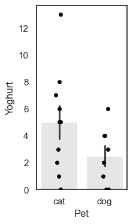
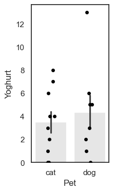
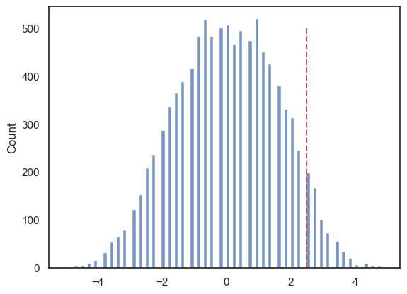

1.8. Permutation test for unpaired or independent samples data#
We will now look at the case of unpaired data. This is data in which we wish to compare two groups but there are no particular links between individuals in one group and individuals in another group.
Examples of unpaired (or independent) data can include :
a comparison of science and humanities students, or first- and final-year students, where the individuals in each group are distinct.
Treatment and control groups drawn from different people
Comparing average heights across two different countries
Because the individuals in each group are distinct, we cannot swap labels within pairs (as we did for the paired test). Instead, the permutation procedure for independent samples randomly reassigns group labels across all observations while preserving the group sizes. This creates resamples consistent with the null hypothesis of no difference between groups, and lets us build the null distribution of the chosen test statistic (for example, the difference in group means).
1.8.1. Set up Python libraries#
As usual, run the code cell below to import the relevant Python libraries
# Set-up Python libraries - you need to run this but you don't need to change it
import numpy as np
import matplotlib.pyplot as plt
import scipy.stats as stats
import pandas as pd
import seaborn as sns
sns.set_theme(style='white')
import statsmodels.api as sm
import statsmodels.formula.api as smf
1.8.2. Toy example#
[A toy example is an example with a very small dataset, just to show how it works]
Question & design#
Suppose we suspect that cat owner eat more yoghurt than dog owners.
We decide to use a independent samples design, comparing yoghurt consumption between a group of cat owners and an unrelated group of dog owners.
Hypotheses#
We can state our hypotheses as follows:
\(\mathcal{H_o}:\) The difference in the mean number of yoghurts eaten by cat owners and dog owners is zero
mean(cat owners’ yoghurt consumption) - mean(dog owners’ yoghurt consumption) = 0
\(\mathcal{H_a}:\) Cat owners eat more yoghurt compared to dog owners
mean(cat owners’ yoghurt consumption) > mean(dog owners’ yoghurt consumption) = 0
Note: This is a one-tailed (directional) test because we predict a specific direction (cat owners > dog owners). If you do not have a justified directional prediction, use a two-tailed test instead. Ideally you should choose one- vs two-tailed testing before you look at the data.
Data#
We survey five cat owners and four dog owners and ask how many times in the last week they ate yogurt. We obtain the following data:
yog = pd.read_csv('https://raw.githubusercontent.com/jillxoreilly/StatsCourseBook_resources/main/data/yoghurt.csv')
yog
| Pet | Yoghurt | |
|---|---|---|
| 0 | cat | 0 |
| 1 | cat | 7 |
| 2 | cat | 5 |
| 3 | cat | 2 |
| 4 | cat | 13 |
| 5 | cat | 1 |
| 6 | cat | 8 |
| 7 | cat | 6 |
| 8 | cat | 3 |
| 9 | cat | 5 |
| 10 | dog | 0 |
| 11 | dog | 0 |
| 12 | dog | 6 |
| 13 | dog | 4 |
| 14 | dog | 1 |
| 15 | dog | 4 |
| 16 | dog | 3 |
| 17 | dog | 2 |
Let’s plot the data. In this case a scatterplot isn’t appropriate, because there is no natural way to pair or connect individuals across the two groups (cat owners and dog owners).
Instead, we can use a bar plot showing the mean for each group, and add individual data points (often called a “dot plot” or “strip plot”) on top. This allows us to see both the group averages and the spread of individual responses.
plt.figure(figsize=(9,4))
plt.subplot(1,4,1)
sns.barplot(data=yog, x='Pet', y='Yoghurt', color=[0.9,0.9,0.9], errorbar='se')
sns.stripplot(data=yog, x='Pet', y='Yoghurt', color=[0,0,0]) # this bit plots the dots
plt.show()

We can see that the mean number of yoghurts eaten is higher for cat owners (the bar for cats is higher than the bar for dog), but this difference might be influenced by one particularly enthusiastic yoghurt-eating cat owner.
Test statistic#
To analyse these data, we again need to summarise the difference in yoghurt consumption with a single number, a test statistic. Here, our test statistic is the difference in group means:
mean(Cat owners) - mean(Dog owners))
This value captures, on average, how many more yoghurts cat owners ate compared to dog owners, and to calculate this you can use the following code:
cat_owners = yog.query('Pet=="cat"')
dog_owners = yog.query('Pet=="dog"')
print(cat_owners.Yoghurt.mean() - dog_owners.Yoghurt.mean())
2.5
Note: here we need to use .query to seperately select the rows of cat and dog owners. Once we’ve done that we can select the column we are interested in (Yoghurt) and calculate the mean using .mean(). You can do this in two steps (as above) or one step (as below):
print(yog.query('Pet == "cat"').Yoghurt.mean() - yog.query('Pet == "dog"').Yoghurt.mean())
2.5
On average, cat owners eat yoghurt 2.5 more times per week than dog owners. Possibly because cats stealing yoghurt are cute.
Is the result statistically significant?#
Even if there were no true difference in yoghurt consumption between pet types, we wouldn’t expect the difference in sample means to be exactly zero. Just by chance, a random sample of cat and dog owners will sometimes show higher yoghurt consumption for cat owners, and sometimes for dog owners.
So we ask:
Is it plausible that the difference we observed (2.5 additional yoghurts per week for cat owners) arose purely by chance in a situation in which there is truly no pet-based difference in yoghurt consumption
In other words, could this happen if the null hypothesis were true?
Under the null, it would simply be random which individuals end up labelled as “cat owners” and which as “dog owners.”
Permutation#
To work out how unusual our observed difference in mean yoghurt consumption between cat and dog owners (2.5) is, we carry out a permutation test. Again, the idea is to shuffle the pet labels and see what kinds of mean differences would occur just by chance (i.e. the null distribution).
For each resample:
Which ones switch changes from resample to resample.
Compute the test statistic:
Randomly reassign people to group: Shuffle the data around to create a new sample in which, we we randomly decide who gets which label, cat or dog while keeping the group sizes the same (10 “cat owners” and 8 “dog owners”).
Calculate the difference of the means: mean(Cat owners)-mean(Dog owners).
Repeat steps 1 & 2 thousands of times this will create a distribution in which the difference between cat owners and dog owners truly was zero. Now we can ask on what proportion of random resamples we get a values of mean(Cat owners)-mean(Dog owners) at least as large as our observed difference, 2.5.
Within each resample, some individuals will retain their true pet identity, and some will be relabelled; which individuals are which will differ between resamples.
In this case as data are unpaired, we don’t need to preserve pared realationships - ie we can swap the pet-labels for any two people in the sample of 18. However, we do still want to preserve the non-pet-based features of the dataset, namely the sample sizes (10 cat owners and 8 dog owners).
Shuffling within our sample of 18 will also preserve the overall features of the dataset:
Non pet-based effects (to be preserved):
Most people eat yoghurt less than once a day
Some people eat loads of yoghurt
ie the distriution of differences has positive skew
Potential pet-based effects (to be “shuffled out”):
The number of times yoghurt is eaten tends to be higher for cat owners
The outlier individual who ate loads of yoghurt was a cat owner
Run the simulation#
To generate new simulated datasets, we will shuffle around the datapoints in our original dataset.
Which ones can we shuffle?
We assume there are no pet-based differences, so we can swap the pet-labels for any individuals in the sample
We stick to the original sample sizes, ie 10 people should always be labelled as cat-owners and 8 as dog-owners
Conceptually, we would achieve this by randomly re-ordering the 18 values in the ‘Yogurt’ column so that a different 10 fall into rows laelled ‘cat’
Visualizing randoms shuffles in the unpaired data#
Let’s see how the difference of means changes over a few random shuffles.
Below I generate 4 random shuffles of our yoghurt data (in which individuals are randomly relabelled as cat- or dog-owners, maintaining the correct number of cat- and dog-owners), and plot the outcomes:

Note that each individual can move between the ‘cat’ and ‘dog’ group at random, but there are always 10 people in the ‘cat’ group and 8 people in the ‘dog’ group.
You can see that the difference of means (difference in heights of the bars) depends on whether more of the high-yoghurt individuals are assigned as cat owners, and also depends quite a lot on which group the 13-yoghurt individual ends up in.
Below is some code that will randomly shuffle our Yoghurt column, but keep the Pet column in tact. What this is essentially doing is radomly shuffle the label (‘Cat’/’Dog’) for each person in the data set. Run the code below several times to see what happens to the plot and the test statistic:
perm = pd.read_csv('https://raw.githubusercontent.com/jillxoreilly/StatsCourseBook_resources/main/data/yoghurt.csv')
#Randomise the order of the Yoghurt column
perm.Yoghurt = perm.Yoghurt.sample(len(perm), replace = False).to_list()
#Plot
plt.figure(figsize=(9,4))
plt.subplot(1,4,1)
sns.barplot(data=perm, x='Pet', y='Yoghurt', color=[0.9,0.9,0.9], errorbar='se')
sns.stripplot(data=perm, x='Pet', y='Yoghurt', color=[0,0,0]) # this bit plots the dots
plt.show()
# Compute the test statistic for THIS permutation
test_stat = perm.query('Pet == "cat"').Yoghurt.mean() - perm.query('Pet == "dog"').Yoghurt.mean()
print(test_stat)

-0.875
1.8.3. Run Many shuffles#
To get an estimate of how likely it is to get a test statistic of 2.5 due to chance, we need to run a lot of shuffles. Here we can loop through our desired number of permutations, repeating this shuffling process each time and recalculaing the test statistic.
nReps = 100
perm_tests = np.empty(nReps)
for i in range(nReps):
# Make a copy so we do not overwrite the original data
perm = pd.read_csv('https://raw.githubusercontent.com/jillxoreilly/StatsCourseBook_resources/main/data/yoghurt.csv')
#Randomise the order of the Yoghurt column
perm.Yoghurt = perm.Yoghurt.sample(len(perm), replace = False).to_list()
perm_tests[i] = perm.query('Pet == "cat"').Yoghurt.mean() - perm.query('Pet == "dog"').Yoghurt.mean()
sns.histplot(data=perm_tests, bins = 10)
---------------------------------------------------------------------------
KeyboardInterrupt Traceback (most recent call last)
Cell In[7], line 6
2 perm_tests = np.empty(nReps)
4 for i in range(nReps):
5 # Make a copy so we do not overwrite the original data
----> 6 perm = pd.read_csv('https://raw.githubusercontent.com/jillxoreilly/StatsCourseBook_resources/main/data/yoghurt.csv')
8 #Randomise the order of the Yoghurt column
9 perm.Yoghurt = perm.Yoghurt.sample(len(perm), replace = False).to_list()
File /opt/anaconda3/anaconda3/lib/python3.11/site-packages/pandas/io/parsers/readers.py:948, in read_csv(filepath_or_buffer, sep, delimiter, header, names, index_col, usecols, dtype, engine, converters, true_values, false_values, skipinitialspace, skiprows, skipfooter, nrows, na_values, keep_default_na, na_filter, verbose, skip_blank_lines, parse_dates, infer_datetime_format, keep_date_col, date_parser, date_format, dayfirst, cache_dates, iterator, chunksize, compression, thousands, decimal, lineterminator, quotechar, quoting, doublequote, escapechar, comment, encoding, encoding_errors, dialect, on_bad_lines, delim_whitespace, low_memory, memory_map, float_precision, storage_options, dtype_backend)
935 kwds_defaults = _refine_defaults_read(
936 dialect,
937 delimiter,
(...)
944 dtype_backend=dtype_backend,
945 )
946 kwds.update(kwds_defaults)
--> 948 return _read(filepath_or_buffer, kwds)
File /opt/anaconda3/anaconda3/lib/python3.11/site-packages/pandas/io/parsers/readers.py:611, in _read(filepath_or_buffer, kwds)
608 _validate_names(kwds.get("names", None))
610 # Create the parser.
--> 611 parser = TextFileReader(filepath_or_buffer, **kwds)
613 if chunksize or iterator:
614 return parser
File /opt/anaconda3/anaconda3/lib/python3.11/site-packages/pandas/io/parsers/readers.py:1448, in TextFileReader.__init__(self, f, engine, **kwds)
1445 self.options["has_index_names"] = kwds["has_index_names"]
1447 self.handles: IOHandles | None = None
-> 1448 self._engine = self._make_engine(f, self.engine)
File /opt/anaconda3/anaconda3/lib/python3.11/site-packages/pandas/io/parsers/readers.py:1705, in TextFileReader._make_engine(self, f, engine)
1703 if "b" not in mode:
1704 mode += "b"
-> 1705 self.handles = get_handle(
1706 f,
1707 mode,
1708 encoding=self.options.get("encoding", None),
1709 compression=self.options.get("compression", None),
1710 memory_map=self.options.get("memory_map", False),
1711 is_text=is_text,
1712 errors=self.options.get("encoding_errors", "strict"),
1713 storage_options=self.options.get("storage_options", None),
1714 )
1715 assert self.handles is not None
1716 f = self.handles.handle
File /opt/anaconda3/anaconda3/lib/python3.11/site-packages/pandas/io/common.py:718, in get_handle(path_or_buf, mode, encoding, compression, memory_map, is_text, errors, storage_options)
715 codecs.lookup_error(errors)
717 # open URLs
--> 718 ioargs = _get_filepath_or_buffer(
719 path_or_buf,
720 encoding=encoding,
721 compression=compression,
722 mode=mode,
723 storage_options=storage_options,
724 )
726 handle = ioargs.filepath_or_buffer
727 handles: list[BaseBuffer]
File /opt/anaconda3/anaconda3/lib/python3.11/site-packages/pandas/io/common.py:372, in _get_filepath_or_buffer(filepath_or_buffer, encoding, compression, mode, storage_options)
370 # assuming storage_options is to be interpreted as headers
371 req_info = urllib.request.Request(filepath_or_buffer, headers=storage_options)
--> 372 with urlopen(req_info) as req:
373 content_encoding = req.headers.get("Content-Encoding", None)
374 if content_encoding == "gzip":
375 # Override compression based on Content-Encoding header
File /opt/anaconda3/anaconda3/lib/python3.11/site-packages/pandas/io/common.py:274, in urlopen(*args, **kwargs)
268 """
269 Lazy-import wrapper for stdlib urlopen, as that imports a big chunk of
270 the stdlib.
271 """
272 import urllib.request
--> 274 return urllib.request.urlopen(*args, **kwargs)
File /opt/anaconda3/anaconda3/lib/python3.11/urllib/request.py:216, in urlopen(url, data, timeout, cafile, capath, cadefault, context)
214 else:
215 opener = _opener
--> 216 return opener.open(url, data, timeout)
File /opt/anaconda3/anaconda3/lib/python3.11/urllib/request.py:519, in OpenerDirector.open(self, fullurl, data, timeout)
516 req = meth(req)
518 sys.audit('urllib.Request', req.full_url, req.data, req.headers, req.get_method())
--> 519 response = self._open(req, data)
521 # post-process response
522 meth_name = protocol+"_response"
File /opt/anaconda3/anaconda3/lib/python3.11/urllib/request.py:536, in OpenerDirector._open(self, req, data)
533 return result
535 protocol = req.type
--> 536 result = self._call_chain(self.handle_open, protocol, protocol +
537 '_open', req)
538 if result:
539 return result
File /opt/anaconda3/anaconda3/lib/python3.11/urllib/request.py:496, in OpenerDirector._call_chain(self, chain, kind, meth_name, *args)
494 for handler in handlers:
495 func = getattr(handler, meth_name)
--> 496 result = func(*args)
497 if result is not None:
498 return result
File /opt/anaconda3/anaconda3/lib/python3.11/urllib/request.py:1391, in HTTPSHandler.https_open(self, req)
1390 def https_open(self, req):
-> 1391 return self.do_open(http.client.HTTPSConnection, req,
1392 context=self._context, check_hostname=self._check_hostname)
File /opt/anaconda3/anaconda3/lib/python3.11/urllib/request.py:1348, in AbstractHTTPHandler.do_open(self, http_class, req, **http_conn_args)
1346 try:
1347 try:
-> 1348 h.request(req.get_method(), req.selector, req.data, headers,
1349 encode_chunked=req.has_header('Transfer-encoding'))
1350 except OSError as err: # timeout error
1351 raise URLError(err)
File /opt/anaconda3/anaconda3/lib/python3.11/http/client.py:1294, in HTTPConnection.request(self, method, url, body, headers, encode_chunked)
1291 def request(self, method, url, body=None, headers={}, *,
1292 encode_chunked=False):
1293 """Send a complete request to the server."""
-> 1294 self._send_request(method, url, body, headers, encode_chunked)
File /opt/anaconda3/anaconda3/lib/python3.11/http/client.py:1340, in HTTPConnection._send_request(self, method, url, body, headers, encode_chunked)
1336 if isinstance(body, str):
1337 # RFC 2616 Section 3.7.1 says that text default has a
1338 # default charset of iso-8859-1.
1339 body = _encode(body, 'body')
-> 1340 self.endheaders(body, encode_chunked=encode_chunked)
File /opt/anaconda3/anaconda3/lib/python3.11/http/client.py:1289, in HTTPConnection.endheaders(self, message_body, encode_chunked)
1287 else:
1288 raise CannotSendHeader()
-> 1289 self._send_output(message_body, encode_chunked=encode_chunked)
File /opt/anaconda3/anaconda3/lib/python3.11/http/client.py:1048, in HTTPConnection._send_output(self, message_body, encode_chunked)
1046 msg = b"\r\n".join(self._buffer)
1047 del self._buffer[:]
-> 1048 self.send(msg)
1050 if message_body is not None:
1051
1052 # create a consistent interface to message_body
1053 if hasattr(message_body, 'read'):
1054 # Let file-like take precedence over byte-like. This
1055 # is needed to allow the current position of mmap'ed
1056 # files to be taken into account.
File /opt/anaconda3/anaconda3/lib/python3.11/http/client.py:986, in HTTPConnection.send(self, data)
984 if self.sock is None:
985 if self.auto_open:
--> 986 self.connect()
987 else:
988 raise NotConnected()
File /opt/anaconda3/anaconda3/lib/python3.11/http/client.py:1466, in HTTPSConnection.connect(self)
1463 else:
1464 server_hostname = self.host
-> 1466 self.sock = self._context.wrap_socket(self.sock,
1467 server_hostname=server_hostname)
File /opt/anaconda3/anaconda3/lib/python3.11/ssl.py:517, in SSLContext.wrap_socket(self, sock, server_side, do_handshake_on_connect, suppress_ragged_eofs, server_hostname, session)
511 def wrap_socket(self, sock, server_side=False,
512 do_handshake_on_connect=True,
513 suppress_ragged_eofs=True,
514 server_hostname=None, session=None):
515 # SSLSocket class handles server_hostname encoding before it calls
516 # ctx._wrap_socket()
--> 517 return self.sslsocket_class._create(
518 sock=sock,
519 server_side=server_side,
520 do_handshake_on_connect=do_handshake_on_connect,
521 suppress_ragged_eofs=suppress_ragged_eofs,
522 server_hostname=server_hostname,
523 context=self,
524 session=session
525 )
File /opt/anaconda3/anaconda3/lib/python3.11/ssl.py:1108, in SSLSocket._create(cls, sock, server_side, do_handshake_on_connect, suppress_ragged_eofs, server_hostname, context, session)
1105 if timeout == 0.0:
1106 # non-blocking
1107 raise ValueError("do_handshake_on_connect should not be specified for non-blocking sockets")
-> 1108 self.do_handshake()
1109 except (OSError, ValueError):
1110 self.close()
File /opt/anaconda3/anaconda3/lib/python3.11/ssl.py:1383, in SSLSocket.do_handshake(self, block)
1381 if timeout == 0.0 and block:
1382 self.settimeout(None)
-> 1383 self._sslobj.do_handshake()
1384 finally:
1385 self.settimeout(timeout)
KeyboardInterrupt:
With 100 permutations you can already see the null distribution taking shape. Most of the permutations center around a small difference between the two group as expected, however how often do we see a difference at least as large as we observed in data set (i.e., 2.5)? To increase our confidence we probably want to run even more permutations!
1.8.4. Run 10,000 shuffles#
To get a fine-grained estimate of how likely it is to get a test statistic of 2.5 due to chance, we run a lot of shuffles - say 10,000.
We can do this using a function from the library scipy.stats, called scipy.stats.permutation_test()
This will have a few advantages. First, the inbuilt function is much faster and therefore we can easily increase the number of permutattions without costing too much time. The function also provides some additional output which we will take a closer look at below. Start by running the code block below - don’t worry too much about the syntax we’ll dive into that later…
def dMeans(x, y):
return np.mean(x)-np.mean(y)
results = stats.permutation_test((yog.query('Pet == "cat"').Yoghurt, yog.query('Pet == "dog"').Yoghurt), dMeans,
permutation_type='independent', alternative='greater', n_resamples=10000)
print(results)
PermutationTestResult(statistic=np.float64(2.5), pvalue=np.float64(0.0663933606639336), null_distribution=array([-1.1 , 0.925, 0.7 , ..., -2.9 , 0.925, -2.225],
shape=(10000,)))
The results are displayed below the code box; there are number of outputs from the test (contained in the parentheses)
statistic - the test statistic (mean difference) from our actual data, ie 2.5
pValue - the proportion of shuffles in which a result greater than 2.5 was obtained (due to chance)
null distribution - this contains all 10,000 difference of mean values, for the 10,000 shuffles
The Null Distribution#
The null distribution is the set of 10,000 values we get for the difference of mean yoghurt consumption for (cat owners - dog owners), from our 10,000 shuffles (the equivalent of the red numbers on the 4-permutation example above)
Let’s plot the null distribution in a histogram we will mark the test statistic from our actual data with a red dotted line:
sns.histplot(results.null_distribution, bins=np.arange(-5,5,0.1))
plt.plot([results.statistic,results.statistic],[0,500], 'r--')
plt.show()

The histogram looks a bit spikey because this dataset is very small and contains several repeated values. As a result, there are only a limited number of possible values that the mean yoghurt consumption of a group of 10 (cat owners) or a group of 8 (dog owners) can take.
Even so, we can see that the observed difference between cat and dog owners’ mean yoghurt consumption (+2.5) is unusual, but not completely extreme, within this permutation distribution.
The \(𝑝\)-value¶#
We can calculate the exact proportion of cases in which the difference of means for cat- minus dog-owners exceeds the value we observed in our original sample, 2.5.
# check which values is the null distribution are greater than 4.6 and code as 1/0
# then use the numpy function np.mean() to get the avergae of those ones and zeros (ie he proportion of 1s)
print(np.mean(results.null_distribution >= 2.5))
0.0663
This proportion is ~0.06 or ~6% (Remember the exact value will differ slightly each time you run the permutation…)
This tells us that if we simulate a situation in which pet ownership does not determine the number of times yoghurt is eaten (but preserving some other important features of the dataset like the high skew), there is still higher than a 5% chance that we would get an apparent pet-based difference as large as the one we observed in our ‘real’ data.
The probability that the test statistic (in this case, the difference in mean times yoghurt is eaten) would be observed if the null hypothesis were true, is sometimes called the \(𝑝\)-value.
Our permutation test shows that the \(𝑝\)-value associated with the observed difference of means is 0.06 or 6%.
The result is considered statistically significant if \(𝑝\) is smaller than some predetermined level, known as \(\alpha\). Usually \(\alpha=0.05\) or \(\alpha=0.01\) is used; this result is not quite significant if \(\alpha=0.05\) but not significant if \(\alpha=0.01\).
1.8.5. Syntax of stats.permutation_test()#
Let’s have a look at the Python code to run the permutation test.
Firstly, we had to give the function stats.permutation_test() our two samples. In this case, the data are in ‘long form’, ie the pet category is defined in one column of the dataset, so cat owners and dog owners are in different rows. We therefore identify our categories useing df.query() with the column we want (Yoghurt) tacked on the end:
(yog.query('Pet == "cat"').Yoghurt, yog.query('Pet == "dog"').Yoghurt)
Secondly, to tell stats.permutation_test() the test statistic we want to get the null distribution of, we had to pass it a function that calculates that test statistic. We created that function, dMeans(), using a function definition, before running the permutation test
Arguments#
When running the permutation test, we have to specify some arguments
n_resamples the number of shuffles to do.
alternative - whether to do a one-tailed test (and in whcih direction: ‘greater’ counts how many shuffles result in test statistic values greater than the one obtained from unshuffled data) or a two tailed test
permutation_type - pairings, samples, or independent. These are for test of correlation, paired data and unpaired data respectively.
Here we are testing for a difference of means in independent (unpaired) samples, so we choose permutation_type='independent' - this randomly shuffles all the datapoints and assignes them randomly to the groups cat/dog.
1.8.6. Recap#
To run a permutation test on unpaired data, we mixed up all the individuals in the sample regardless of category (pet ownership), and randomly split them into two groups. We kept the original group sizes (10 and 8 in this case), as we want to retain the characteristics of the original dataset that one group is larger
For each shuffle we calculated the mean yoghurt consuption for each ‘pet’ group.
Permutation testing in this way gives us a null distribution for the difference of means. Values of difference of means that occur rarely in the null distribution are considered statistically significant.
To run the permutation test with scipy.stats we need the option permutation_type='independent'